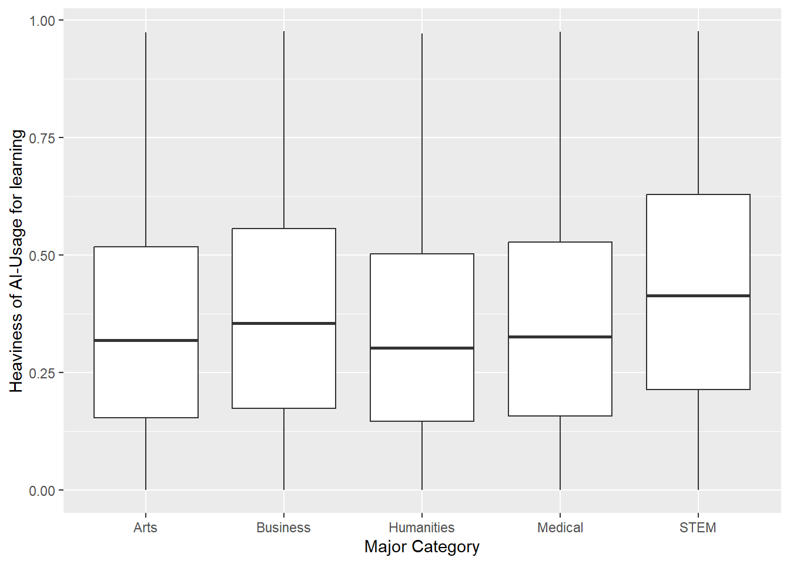

Code
library(tidyverse)
library(here)
data <- read_csv(here("data", "raw", "ai_student_impact_dataset (1).csv"))Paul Gustav Hoffmann
July 23, 2026
The synthetic dataset is called “Impact of Ai on Students” and is created by laveshjadon.
It is licensed under CC0 1.0 Universal.
Content:
The synthetic dataset “Impact of Ai on Students” is about the generative AI usage of students and its effects on them. There are 50000 rows representing 50000 simulated students. Also, 16 simulated features are listed in their 16 columns. They capture various key information of the students (e.g., their major, study year & GPA score), but also how they use generative AI (e.g., which tools they use, which use case they have & their prompting skills).
Where does the data come from?
The data is synthetically generated as stated in the provenance tab of the source.
However, I reason that the data is sensibly created and is suitable for further research for the following reasons:
- Good documentation (namely the creation process)
- Vastly exposed to the public in the form of downloads, discussions, or notebooks
- The creator has a comprehensive track record on Kaggle
1. In which majors is the GPA most affected by heavier AI Usage?
2. How can AI be used for the best GPA score?
The audience for this analysis is students who want to understand how they can use AI for improving their grade and where they should avoid using it. The overall message is more important than the details for this scenario. So simple visualizations like graphs without clutter should work best.
Rows: 50,000
Columns: 16
$ Student_ID <dbl> 100001, 100002, 100003, 100004, 100005, 100…
$ Major_Category <chr> "Humanities", "Medical", "Business", "Busin…
$ Year_of_Study <chr> "Senior", "Junior", "Freshman", "Senior", "…
$ Pre_Semester_GPA <dbl> 2.418, 3.821, 3.398, 3.789, 3.635, 3.449, 3…
$ Weekly_GenAI_Hours <dbl> 23.31, 1.12, 21.26, 1.82, 9.29, 6.50, 31.41…
$ Primary_Use_Case <chr> "Copywriting/Drafting", "Ideation", "Summar…
$ Prompt_Engineering_Skill <chr> "Beginner", "Advanced", "Beginner", "Interm…
$ Tool_Diversity <dbl> 1, 5, 2, 4, 4, 1, 5, 3, 2, 2, 3, 3, 2, 1, 1…
$ Paid_Subscription <lgl> TRUE, FALSE, FALSE, FALSE, FALSE, FALSE, TR…
$ Traditional_Study_Hours <dbl> 8.13, 16.65, 10.35, 15.23, 12.55, 14.19, 13…
$ Perceived_AI_Dependency <dbl> 5, 3, 5, 2, 4, 4, 8, 2, 1, 3, 5, 3, 2, 2, 2…
$ Institutional_Policy <chr> "Allowed_With_Citation", "Allowed_With_Cita…
$ Anxiety_Level_During_Exams <dbl> 6, 9, 9, 2, 4, 5, 7, 1, 5, 8, 3, 3, 4, 3, 4…
$ Post_Semester_GPA <dbl> 2.393, 3.696, 3.499, 4.000, 3.798, 3.666, 4…
$ Skill_Retention_Score <dbl> 86.44, 69.39, 73.93, 63.58, 100.00, 65.92, …
$ Burnout_Risk_Level <chr> "High", "Low", "Medium", "Medium", "Medium"… Student_ID Major_Category Year_of_Study Pre_Semester_GPA
Min. :100001 Length:50000 Length:50000 Min. :1.183
1st Qu.:112501 Class :character Class :character 1st Qu.:2.834
Median :125001 Mode :character Mode :character Median :3.210
Mean :125001 Mean :3.146
3rd Qu.:137500 3rd Qu.:3.521
Max. :150000 Max. :3.998
Weekly_GenAI_Hours Primary_Use_Case Prompt_Engineering_Skill Tool_Diversity
Min. : 0.000 Length:50000 Length:50000 Min. :1.0
1st Qu.: 2.390 Class :character Class :character 1st Qu.:2.0
Median : 5.800 Mode :character Mode :character Median :3.0
Mean : 8.428 Mean :2.8
3rd Qu.:11.720 3rd Qu.:4.0
Max. :40.000 Max. :5.0
Paid_Subscription Traditional_Study_Hours Perceived_AI_Dependency
Mode :logical Min. : 1.00 Min. : 1.000
FALSE:28846 1st Qu.: 7.56 1st Qu.: 2.000
TRUE :21154 Median :11.18 Median : 3.000
Mean :11.21 Mean : 3.505
3rd Qu.:14.71 3rd Qu.: 5.000
Max. :35.86 Max. :10.000
Institutional_Policy Anxiety_Level_During_Exams Post_Semester_GPA
Length:50000 Min. : 1.000 Min. :1.000
Class :character 1st Qu.: 3.000 1st Qu.:3.024
Mode :character Median : 4.000 Median :3.421
Mean : 4.271 Mean :3.349
3rd Qu.: 6.000 3rd Qu.:3.749
Max. :10.000 Max. :4.000
Skill_Retention_Score Burnout_Risk_Level
Min. : 10.78 Length:50000
1st Qu.: 66.82 Class :character
Median : 76.00 Mode :character
Mean : 75.80
3rd Qu.: 85.19
Max. :100.00 The dataset is pretty clean as it has no missing values or weird formatting. Now that we know more about the dataset, let’s do some EDA:
Interestingly, the Tool_Diversity doesn’t seem to be affected by the student using a Paid_Subscription or not.
Students in the business sector seem to have the most Weekly_GenAI_Hours, while people who use it the least are in the field of humanities.
But this doesn’t consider the Traditional_Study_Hours hours at all. So we might have a bias if there are differences in the total learning hours between each Major_Category.
E.g., students of one major might use generative AI for fewer hours than others, while also learning way less in general. This would result in them using generative AI more than other majors when they learn, while the opposite is shown in the plot.
We can resolve this by looking at the percentage of AI used for learning instead:
\[ \text{Percentage\_Of\_AI\_Usage} = \frac{\text{Weekly\_GenAI\_Hours}}{\text{Traditional\_Study\_Hours} + \text{Weekly\_GenAI\_Hours}} \]

Luckily we can see that nothing truly changes, when also considering the Traditional_Study_Hours.
The most important variables I am going to use are the pre and post semester GPA, as for both questions we need to measure the students’ performance affected by AI.
For question 1, we also need the weekly generative AI study hours and the traditional study hours to measure how heavy the students’ AI usage is in percentages. To compare the majors in the first place, we need the accordingly called column. As we have 3 dimensions now, faceting by the majors is the way to avoid clutter.
For question 2, the idea is to create a model which can predict how students should use AI to improve the GPA score, given some information about the student. This will surely use most columns of the dataset.